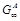
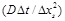

Journal of Fluid Flow, Heat and Mass Transfer (JFFHMT)
ISSN: 2368-6111

Volume 2 - Year 2015 - Pages 14-25
DOI: 10.11159/jffhmt.2015.003
Simulation of Time-Lag Permeation Experiments Using Finite Differences
Haoyu Wu, Neveen Al-Qasas, Boguslaw Kruczek, Jules Thibault*
Department of Chemical and Biological Engineering, University of Ottawa
161 Louis Pasteur, Ottawa, Ontario, Canada K1N 6N5
hwu055@uottawa.ca; nalqa027@uottawa.ca; bkruczek@uottawa.ca; Jules.Thibault@uottawa.ca
Abstract - Membrane-based pressure driven processes are used in an increasing number of applications. To properly design membrane applications, it is necessary to have a good estimate of membrane properties. To characterize membrane permeation properties, the time-lag method is commonly used. A study has been undertaken to gain a deeper understanding on the accuracy of the time-lag method under realistic boundary conditions using numerical methods. Numerical simulations offer the opportunity to obtain a solution to the Fick’s diffusion equation under various boundary conditions and for nonlinear sorption behaviour for which analytical solutions are difficult or impossible to obtain. This paper is mainly concerned with the selection of the optimal finite difference scheme for solving the Fick’s diffusion equation that leads to the accurate determination of the membrane time lag. Pressure responses in the upstream and downstream reservoirs at both membrane interfaces are determined from the concentration gradients. The concentration gradient at the upstream side of the membrane is initially very steep and to accurately extract membrane properties, it is important to predict it very accurately. Simulation results for the prediction of concentration profiles and gradients at both interfaces are compared with known benchmark analytical equations to assess the precision of numerous numerical schemes where the effect of mesh size and time step is quantified. Results show that a variable mesh size is required to predict accurately the concentration gradient at the upstream interface. The choice of a variable mesh size scheme is important as a compromise must be struck between the smallest mesh size and the time step as it greatly impacts on the computation time. Results also showed that both the implicit and explicit finite difference schemes gave very similar results.
Keywords: Membrane characterization, finite differences, time lag, upstream pressure decay, variable mesh scheme.
© Copyright 2015 Authors This is an Open Access article published under the Creative Commons Attribution License terms. Unrestricted use, distribution, and reproduction in any medium are permitted, provided the original work is properly cited.
Date Received: 2015-05-12
Date Accepted: 2015-08-10
Date Published: 2015-09-15
Nomenclature
- A: Cross sectional membrane area, m2
- C: Permeating gas concentration, mol/m3
- D: Diffusion coefficient, m2/s
- GA: Analytical concentration gradient, mol/(m·m3)
- : Steady-state analytical concentration gradient, mol/(m·m3)
- Gu: Upstream concentration gradient, mol/(m·m3)
- Gd: Downstream concentration gradient, mol/(m·m3)
- J: Flux, mol/(m2·s)
- L: Membrane thickness, m
- n: Number of time increments
- N: Total number of mesh points for both uniform and variable mesh schemes
- N0: Number of original uniform mesh sizes before conversion to variable mesh
- N1: Number of uniform mesh sizes converted to variable mesh sizes
- N2: Number of converted variable mesh sizes from uniform mesh sizes
- pA: Analytical pressure change, kPa
- p0: Constant pressure in the upstream chamber, kPa
- pu: Upstream pressure, kPa
- pd: Downstream pressure, kPa
- P: Permeability, mol·m/(m2·Pa·s)
- R: Universal gas constant, J/(K·mol)
- S: Solubility, mol/(m3 Pa)
- t: Simulation time, s
- T: Absolute temperature, K
- Vu: Upstream volume, m3
- Vd: Downstream volume, m3
- x: Permeation distance, m
- ɛ: Error between analytical results and numerical results
- Δt: Simulation time step, s
- Δx1: Grid size upstream of the grid point located at x, m
- Δx2: rid size downstream of the grid point located at x, m
- Δxs: First and smallest mesh size for both the variable and uniform mesh schemes.
- Δpu: Upstream pressure decrease, kPa
- Δpd: Downstream pressure increase, kPa
- θA: Analytical time lag, s
- θu: Upstream time lag, s
- θd: Downstream time lag, s
1. Introduction
Membrane-based pressure driven processes are used in an increasing number of applications, and are the subject of intensive research and development [1]. To characterize simple permeation processes as well as more complex processes involving diffusion with simultaneous adsorption, the time-lag method initially proposed by Daynes [2] and then modified by Barrer [3] is the method that is currently being used by most researchers. The determination of the time lag allows finding the membrane diffusion coefficient for a target solute. The downstream time lag is based on the downstream pressure increase, while the upstream time lag is based on the detection of the pressure decay in the upstream chamber. Our research group has undertaken an experimental research program to devise new and improved methods to rapidly and accurately determine membrane properties. To complement the experimental program, numerical simulations are also performed to gain a deeper understanding on the flow of molecules across the membrane. Numerical simulations offer the opportunity to obtain solutions for the Fick’s diffusion equation under various boundary conditions at which analytical solutions are difficult or impossible to obtain, in addition to consider diffusion within membranes that is characterized with nonlinear sorption behaviours.
This paper is mainly concerned with the selection of the optimal finite difference scheme for solving the Fick’s diffusion equation that leads to the accurate determination of the upstream and downstream membrane time lags. For the experimental determination of the time lag, the system usually consists of a thin membrane separated by two fixed-volume chambers, which are initially maintained under high vacuum (see Figures 1 and 2). The experiment starts when the upstream chamber is rapidly filled with a high pressure gas. The gas then progressively permeates through the membrane leading to a decrease in the pressure in the upstream chamber and an increase in the pressure of the downstream chamber. Based on the plots of the upstream and downstream pressure differences as a function of time, it is possible to determine the upstream and downstream time lags, respectively. The time lags are obtained by evaluating the intercept of the linear portion of the pressure difference curves with the time axis as schematically shown in Figure 3. The time lag θ is directly proportional to the reciprocal of the membrane diffusion coefficient D [2] Eqs. (1) and (2) give, respectively, the relationships that exist between the upstream and downstream time lags with the membrane diffusion coefficient and thickness.
At time t = 0-, the system is maintained under high vacuum and at t = 0+ the system is suddenly exposed to high pressure gas that rapidly fills the upstream chamber. Vu and Vd are the upstream and downstream volumes, pu(t) and pd(t) are the upstream and downstream pressure changes as a function of time, C(x,t) is the concentration profile within the membrane as a function of permeation distance x and time t and D, S and P are the membrane properties: diffusion coefficient, solubility and permeability, respectively.
where L is the membrane thickness, D is the diffusion coefficient, and qu and qd are the upstream and downstream time lags, respectively.
The change in gas pressure in both chambers as a function of time is determined from the concentration gradients at their respective gas-membrane interfaces. Because the upstream interface of the membrane is subjected to a step change in the gas pressure, the concentration gradient at the upstream side of the membrane is initially very steep compared to the concentration gradient observed at the downstream side of the membrane. To accurately extract membrane properties from the upstream pressure difference curve, it is important to predict as accurately as possible the concentration gradient at that interface. A numerical model was developed to simulate the gas permeation process and predict the concentration profile as a function of time. The derivative of the concentration profile at the interfaces leads to the calculation of the interface gradients, which in turn allows calculating the pressure change in the upstream and downstream chambers of known volumes as a function of time. The time lag can then be obtained. In this investigation, the finite difference method (FDM) is used to discretize the one-dimensional Fick’s second law of diffusion over the membrane into a number of finite thin slices and to solve numerically the partial differential equation to obtain the concentration profile of the gas permeating within the membrane.
In this paper, to support the experimental and numerical research program undertaken to determine the conditions under which the evaluation of the upstream and downstream time lags leads to better accuracy, numerical permeation experiments are performed to assess this precision. For quantifying this precision, simulation results for the prediction of concentration profiles, the concentration gradients at the two gas-membrane interfaces, the upstream and downstream pressure profiles and the time lag as a function of time were compared with benchmark analytical solutions. The paper is divided as follows. The benchmark analytical solutions for conventional boundary conditions are first presented, followed by a description of the various numerical schemes that have been investigated. Results of the various numerical studies are presented and discussed before concluding.
2. Analytical Solutions
A series of benchmark analytical solutions for the concentration profiles, the gradients at both interfaces, and the changes in pressures in the upstream and downstream volumes have been used to compare the different numerical schemes. These analytical solutions are presented in this section.
For the simplest case, the gas permeation via diffusion through the membrane follows Fick’s second law of diffusion which allows representing the concentration C(x, t) of the permeating species as a function of time (t) and position (x) via Eq. (3) where the diffusion coefficient (D) of the permeating gas within the membrane is assumed to be constant.
For deriving one of the benchmark solutions, the two chambers separating the membranes are initially under high vacuum such that the initial concentration throughout the membrane is equal to zero. The experiment starts when the upstream chamber is rapidly filled with the permeating species to reach a relatively high pressure which is maintained constant during the experiment. The permeating gas molecules start diffusing through the membrane and eventually emerge into the downstream chamber. The amount of the gas that accumulates in the downstream chamber is considered to be negligible so that the concentration of the gas at the permeate interface of the membrane is assumed to be zero during the experiment. Based on these assumptions, the initial condition (IC) and the two boundary conditions (BC1 and BC2) used to derive the analytical solution are given in Eq. (4).
where C is the concentration of the permeating gas, p0 is the constant pressure in the upstream chamber, S is the solubility of the membrane and L is the thickness of the membrane. The two boundary conditions are ideal boundary conditions for which it is possible to derive an analytical solution. The solution of Eq. (3) subjected to the initial and ideal boundary conditions of Eq. (4) can be obtained using the method of separation of variables and is given in Eq. (5) [4]. This equation gives the concentration profile as a function of time t and permeation distance x.
To determine the concentration gradients at both interfaces, the Fick’s first law can be used where, as expressed by Eq. (6), the flux J is the negative of the product of the diffusivity and the gradient.
The benchmark analytical solutions for the gas fluxes at the upstream side (x = 0) and downstream side (x = L) of the membrane are evaluated using Eqs. (7) and (8), respectively:
To develop the analytical solutions for the concentration profile (Eq. (5)) and the mass fluxes at the interfaces (Eqs. (7) and (8)), it was necessary to use the boundary conditions given in Eq. (4). To determine the time lag, a pressure difference needs to be recorded in the upstream and/or downstream chambers such that the two boundary conditions of Eq. (4) are not perfectly satisfied. However, the pressure changes in both chambers are relative small such that the deviations from the theoretical boundary conditions are relatively small and do not have a major impact on the determination of the time lag. As a result, the mass flux at the two interfaces are calculated with the prevalence of the two boundary conditions of Eq. (4) even if the two gradients at the interfaces would be in reality slightly different than the ones calculated with the assumptions of Eq. (4).
The pressures in the upstream and downstream chambers can be calculated by performing a simple mass balance in each chamber while integrating Eqs. (7) and (8) with time. The following expressions were derived for the upstream and downstream pressures as a function of time:
where p(0, t) and p(L, t) are the respective pressure at the upstream and downstream interfaces, pu and pd are the pressure decrease at the upstream interface and pressure increase at the downstream interface, A is the cross sectional area of the membrane and R is the gas constant.
At long permeation time (t·D/L2>1), the transient terms in Eqs. (10) and (12) become negligible and these equations reduce to the following two linear equations:
The intercept of the linear portion of the pressure difference curves with the time axis (see Figure 3), obtained after a long permeation time, gives the upstream and downstream time lags. The time lags, evaluated from the pressure changes on both sides of the membrane, are directly proportional to the reciprocal of the membrane diffusion coefficient, as shown in Eqs. (1) and (2).
3. Numerical Solutions
3. 1. Numerical Solutions
The benchmark analytical solutions derived in the previous section under ideal boundary conditions can be used to evaluate the accuracy of the numerical solutions. The evaluation was performed for the following variables: concentration profiles, gradients at the interfaces, changes in the upstream and downstream pressures, and time lag. Eq. (3), subject to the initial and boundary conditions of Eq. (4), was solved numerically using finite differences [5]. The continuous domain of the membrane was discretized into a number of grid points and the Fick’s second law of diffusion was approximated by finite differences for each of these grid points. For each point of the grid, it is therefore possible to write an algebraic equation to approximate the differential equation using Taylor’s series expansion with respect to a change in time, Δt. For all grid points in the solution domain, Eq. (3) can be approximated as follows.
where Δx1 and Δx2 are the grid sizes upstream and downstream of the grid point located at x, respectively. For a uniform grid size, Δx1 would be equal to Δx2. The concentration profile can be obtained numerically via Eqs. (16) and (17) respectively, using an explicit or implicit numerical scheme. For the explicit scheme, the concentration can be calculated directly at time t+Δt at every grid point whereas for the implicit scheme the concentration profile at time t+Δt is obtained by solving a tridiagonal matrix [5]. For the explicit scheme, the Courant number [6] or dimensionless time increment  must be smaller than or equal to 0.5 to ensure numerical stability. Δxs is smallest mesh size (in this investigation it corresponds to the first mesh size) for both the variable and uniform mesh schemes. The implicit scheme is unconditionally stable but in this investigation we have used the same criterion to select the integration time step. In addition, the Crank-Nicolson algorithm [5], which is a combination of explicit and implicit algorithms, was also implemented.
Eqs. (16) and (17) are valid for all interior grid points. To satisfy the two boundary conditions, Eqs. (18) (a) and (b) are used for the first and last grid points, respectively.
The concentration gradients at both surfaces of the membranes are calculated from the concentration profile using Eqs. (19) and (20).
where N is the number of grid points in the solution domain. The pressure differences are calculated from the gradient on both sides of the membrane via Eqs. (21) and (22) where T is the absolute temperature, Gu and Gd are the upstream and downstream concentration gradients, Vu and Vd are the upstream and downstream volumes of the chambers and n is the number of time increments Δt for which the simulation was run.
3. 2. Numerical Schemes for Variable Mesh Sizes
Since the gradient at upstream interface of the membrane is very steep, especially at a short permeation time, it is desired to resort to a relatively small mesh size at this interface to predict very accurately the concentration gradient. In this investigation, both uniform and variable mesh sizes were used. For the scheme with variable mesh size, a number of uniform grid sizes at the two membrane boundaries were transformed into a number of progressively increasing mesh sizes starting with a very small mesh size at the surface. Figure 4 shows one of the variable mesh schemes that were used in this study where 3 uniform mesh sizes were converted into 10 variable mesh sizes.
To obtain an exponentially increasing mesh size, a multiplication factor was defined for each variable mesh scheme such that the smallest mesh point at the boundary is progressively increased until the uniform central mesh size is obtained. The uniform mesh size is then used for all the other interior points. For the variable mesh scheme illustrated in Figure 4, the factor to convert the 3 uniform mesh sizes into 10 variables mesh is 1.311129915. The size of the first mesh is calculated using Eq. (23) where the uniform mesh size (=L/(N0 - 1)) is divided by the factor to the 10th power. N0 is the number of grid points used with a uniform mesh size.
The sizes of the subsequent variable meshes are calculated using Eqs. (24) and (25) for the upstream and downstream boundaries, respectively.
Three different factors were tested in this investigation and their values are given in Table 1. In Eqs. (23) and (25), N0 represents the original number of mesh points in a uniform grid. N1 represents the number of uniform mesh sizes that were converted into N2 variable mesh sizes. The number of grid points will therefore increase from N0 to N0+2(N2 - N1) when a variable grid scheme is used. For both mesh schemes, the total number of mesh points will be denoted N.
It is important to reiterate that in practice, the upstream and downstream pressure changes cannot be observed under ideal boundary conditions (Eq. (4)) and analytical solutions are only available under these ideal conditions. However, in this investigation, these ideal boundary conditions were used to estimate the pressure changes that would occur in the upstream and downstream chambers. Since the changes in pressures for real boundary conditions are usually very small, errors associated with these ideal boundary conditions are also very small. The concentration profiles, concentration gradients, pressure differences and time lags calculated numerically were compared with the analytical benchmark solutions and average percentage errors were calculated to determine the accuracy of various numerical schemes. The numerical scheme was then used to gain a deeper understanding of the time lag method.
|
Factor |
Factor 1 |
Factor 2 |
Factor 3 |
|
Factor |
1.490777275 |
1.311129915 |
1.150984101 |
|
N1 |
2 |
3 |
5 |
|
N2 |
10 |
10 |
10 |
4. Results and Discussion
In this investigation, analytical calculations and numerical simulations were performed under typical laboratory operating conditions that were used in actual experimental membrane tests. The typical experimental parameters are listed in Table 2.
|
Parameter |
Value |
Units |
|
|
Operating conditions |
Temperature T |
273.15 |
K |
|
Operating pressure p0 |
689 (100) |
kPa (psi) |
|
|
Membrane properties |
Membrane solubility S |
2.74×10-4 |
mol/(m3 Pa) |
|
Membrane diffusivity D |
4.52×10-12 |
m2/s |
|
|
Membrane thickness L |
23.5x10-6 |
m |
|
|
Membrane area A |
0.00125 |
m2 |
|
|
Membrane system parameters |
Upstream volume Vu |
9.68×10-5 |
m3 |
|
Downstream Volume Vd |
9.68×10-5 |
m3 |
|
4. 1. Concentration Profiles
Figure 5 presents the dimensionless average percentage error for the prediction of the concentration profiles as a function of the number of mesh points. In Figure 5, results are presented for both uniform and variable (Factor 2) schemes using both explicit and implicit finite difference methods. The dimensionless concentration percentage average error ɛ(C), calculated using Eq. (26), corresponds to the average error for the prediction of the concentration profiles for all mesh points (N) and m different times. In the present investigation, m was equal to 8 which corresponds to the times the numerical and analytical solutions were compared which, in this investigation, the comparison was performed each 10 s up to 80 s. Superscript A in Eq. (26) designates the evaluation with the analytical solution (Eq. (5)).
Results of Figure 5 clearly show that the concentration profiles are obtained very accurately with an average percentage error of less than 0.015% when the number of mesh points is larger than about 25. For the prediction of the concentration profiles, both the explicit and implicit finite difference schemes lead to very small errors with slightly better predictions obtained with the implicit scheme. Similar results were obtained with the Crank-Nicolson algorithm where the error was always between the explicit and implicit methods. Since no benefits using the Crank-Nicolson algorithm were observed, only the explicit and implicit methods were considered in this investigation. In addition, results were identical for the uniform and variable mesh size. It can be safely stated that the numerical scheme used in this investigation led to very accurate concentration profile predictions and that it can be used with confidence for other problems for which analytical solutions do not exist or were not yet derived.
4. 2. Concentration Gradients
Figure 6 and Figure 7 present the plots of the upstream and downstream gradient percentage errors evaluated at three different times: 2, 4 and 10 s. The gradients were computed numerically (Eqs. (19) and (20)) and compared with the analytical gradients in order to determine the error in its prediction as defined by Eqs. (27) and (28)
where Gu and Gd are the upstream and downstream gradients, respectively. Superscript A designates the analytical solution. Since the downstream gradient is initially zero, the steady-state analytical gradient was used in Eq. (28) to avoid dividing by zero or by an extremely small number.
Results for the upstream gradient (Figure 6) obtained with a uniform mesh size show a progressively decreasing percentage error starting with 10 grid points with relatively high percentage error values of 4.915%, 2.395% and 0.953% at 2, 4 and 10 s, respectively. As the number of grid points increases, the percentage error becomes very small and reaches a value below 0.013% when the number of mesh points is 300. The percentage error in the case of the variable mesh size starts with relatively small negative values of -0.437%, -0.402% and -0.067% evaluated at 2, 4 and 10 s, respectively. The percentage errors then decrease to cross the zero-error line and to assume small positive percentage errors before progressively decreasing to very small percentage errors as the number of mesh points is increased. For a number of mesh points greater than 100, both uniform and variable mesh schemes lead to very small percentage errors. The insert in Figure 6 shows that the percentage errors are slightly smaller for a uniform mesh size when a higher number of mesh points is used and times larger than 2s.
Results for the downstream gradient (Figure 7) obtained with a uniform and a variable mesh size show a progressively decreasing percentage error as the number of mesh points is increased. For the downstream gradient, the percentage error for the variable mesh size is slightly higher than for the uniform mesh size. The use of a variable mesh size for the downstream side of the membrane is therefore not required. The percentage prediction error for the downstream gradient is extremely low for small simulation times because the permeating gas has not yet emerged from the membrane. At higher times, the downstream gradient becomes more pronounced and approaches the steady-state analytical gradient (). For all simulation times, the percentage errors were always below 0.02% for a number of mesh points of 150 or more.
4. 3. Pressure Changes
With the instantaneous values of the gradients being calculated at the membrane boundaries, it is possible to determine the pressure changes in the upstream and downstream chambers using Eqs. (21) and (22). Figure 8 presents the plots of the upstream pressure decay percentage error at 10 and 80 s. The pressure decay is computed with the results of the implicit finite difference method and the pressure decay relative percentage error equation is calculated by comparing the analytical and numerical values using Eq. (29).
Results show that the upstream pressure decay percentage error for both uniform and variable meshes decreases steadily with an increase in the number of mesh points. For a given number of mesh points, the percentage error is smaller by an order of magnitude when a variable mesh size is used. Since the change in pressure is the integration of the permeating gas flux at the interface, any error in the determination of the gradient will progressively accumulate as a function of time. The insert of Figure 6 shows that for a sufficiently large number of mesh points, smaller positive percentage prediction errors were observed for a uniform mesh point for simulation time greater than 2 s. To better explain the significant difference observed between the uniform and variable mesh sizes of Figure 8, it is important to examine the percentage errors of the upstream gradient at very short permeation time where the upstream gradient is the steepest. Figure 9 presents the variation of the percentage error of the upstream gradient for short permeation times. It is clear from this graph that the gradient percentage error for the variable mesh size is much smaller at short permeation time and decreases by two orders of magnitude in the first 0.5 s. The difference observed in Figure 8 between the uniform and variable mesh sizes is mainly due to the integration performed at early time and this difference persists for larger time. This is certainly for the upstream pressure change that the use of variable mesh points takes all its importance.
The percentage error for the downstream pressure change as a function of the number of mesh points is presented in Figure 10. In general, regardless of the number of mesh points and the permeation time, the percentage error for the downstream pressure change is similar for the uniform and variable mesh schemes. For a number of mesh points greater than 120 and a shorter permeation time (10 s), the pressure change is over-predicted by approximately 0.09% and the error decreases with an increase in the number of mesh points. On the other hand, at a longer permeation time (80 s) and N = 120, the pressure change is under-predicted by roughly 0.01%. For both upstream and downstream pressure differences, the errors are relative percentage errors.
However, if the absolute errors were considered instead of the relative errors, results would show that the error accumulates with time. For instance, for a variable scheme with 150 mesh points, the absolute error at 10 s is 0.525 Pa while the error at 80 s is 0.548 Pa whereas for a uniform scheme with 164 mesh points, the absolute error at 10 s is 0.035Pa while the error at 80 s is 0.058 Pa. These results clearly show the importance of using a variable mesh scheme to capture adequately the concentration gradient at the upstream interface and that the absolute error strongly depends on the prediction error occurring at very short time where the concentration gradient is very steep.
4. 4. Time Lags
Figures 11 and 12 show the plots of the upstream and downstream time lag percentage errors as a function of the number of mesh points, respectively. The evaluation of the time lag, that is the extrapolation of the linear portion of the pressure curve as a function of time, was performed at a permeation time of 190 s. The time lag is computed with the implicit finite difference method and the percentage time lag prediction error is calculated via Eq. (30).
Figure 11 shows that the percentage error of the upstream time lag is strongly influenced by the mesh scheme used to solve the problem. For a greater accuracy in the determination of the time lag, it is important to use a variable mesh scheme to capture the steep gradient at early permeation times because the determination of the time lag relies strongly on total upstream pressure change which results from the integration of the permeation flux at the upstream interface. Variable mesh schemes V1, V2 and V3 correspond to variable mesh scheme using Factors 1, 2 and 3, respectively. It appears that the variable mesh size with Factors 1 or 2 lead to very good results. Simulations presented in Figure 9 with Factor 2 for very short permeation times, were also performed for Factors 1 and 3. Results (not shown) were nearly identical for Factors 1 and 2 but significantly better that those for Factor 3 and uniform mesh. Since the smallest mesh size for Factor 1 is significantly smaller than for Factor 2, the time step needs also to be smaller which leads to higher computation time. Factor 2 was therefore used for most results presented in this investigation.
For the downstream time lag, results of Figure 12 show that the percentage time lag prediction error is a function of the number of mesh points, but unlike the upstream time lag, the uniform mesh size is slightly better than the variable mesh size, but the difference is rather insignificant. The reason for the insignificant difference is the smooth concentration profile for the downstream interface. The accuracy of the time lag stabilizes to a percentage error of less than 0.015% for a number of mesh points greater than 150.
4. 5. Computation Time
Figure 13 presents the magnitude of dimensionless percentage average error ɛ(C) for the concentration profile within the membrane as a function of the integration time step to study the accuracy of the numerical method with respect to the time step. Results clearly show that for the range of time steps that was investigated, the percentage error is very small in all cases. However, for a greater accuracy, a time step of 0.00005 s could be chosen as an optimal value and a compromise between accuracy and computation. Indeed, using a smaller time step would only lead to greater computation time and not to a greater accuracy.
Figure 14 presents an analysis to determine the computation time as a function of the number of mesh points. The computation time increases linearly with the number of mesh points. Comparing the two numerical methods, the implicit method with the same time step required a larger computation time than the explicit method because it is required to solve at each time step the resulting tridiagonal matrix. Since the explicit finite difference led most of the time to a similar accuracy and it requires much less computation time, it is recommended to use explicit finite differences to solve the type of problems encountered in this investigation.
5. Conclusion
Results have shown that the concentration profiles can be solved very accurately regardless of the finite difference scheme used to solve the Fick’s second law of diffusion. The concentration gradients obtained with a uniform mesh scheme can predict the downstream time lag with a very good accuracy. However, to predict the upstream time lag, using a variable mesh size to have a small mesh size at the interface is required. Results have shown that the gradient percentage errors obtained with a variable mesh size are significantly smaller that the gradients percentage errors obtained with a uniform mesh size, especially at earlier permeation time when the gradient is very steep. Since the pressure change is the time-integration of the flux at the interface, the prediction errors on the gradients have a major impact on the upstream pressure difference curve from which the time lag is evaluated. Results have shown that a variable mesh scheme where the first three uniform mesh sizes are transformed into 10 variable meshes (Factor 2) is a good compromise between accuracy and computation time.
This investigation has also allowed showing that both explicit and implicit finite difference schemes led to similar results. It is recommended to use an explicit scheme because of lower computation time for the same accuracy. However, the implicit scheme would be advantageous over the explicit method when 1) the time interval is too large for the explicit method to remain stable; 2) solving “stiff” initial value/boundary value problems and 3) solving nonlinear problems where stability criteria are very sensitive to nonlinearity. Crank-Nicolson algorithm [5] was also tested and the accuracy was found to be between the explicit and implicit schemes.
It is concluded that the numerical scheme used in this investigation can be used with confidence to solve problems with various boundary conditions and for systems where nonlinear diffusive behaviour is observed.
References
[1] P. Bernardo and G. Clarizia, “30 Years of Membrane Technology for Gas Separation,” Chemical Engineering Transactions, vol. 32, pp. 1999-2004, 2013. View Article
[2] H.A. Daynes, “The process of diffusion through a rubber membrane,” Proceedings of the Royal Society of London, London, UK, 1920, vol. 97A, pp. 286-307. View Article
[3] R. Barrer and E. Rideal, “Permeation, diffusion and solution of gases in organic polymers,” Transactions of the Faraday Society, vol. 35, pp. 628-643, 1939. View Article
[4] S.W. Rutherford and D.D. Do, “Review of time lag permeation technique as a method for characterisation of porous media and membranes,” Adsorption, vol. 3, pp. 283-312, 1997. View Article
[5] B. Carnahan, H.A. Luther and J. O. Wilkes, Applied numerical methods, New York, USA: Wiley, 1969.
[6] A. Iserles, A first course in the numerical analysis of differential equations. No. 44. Cambridge University Press, 2009. View Book